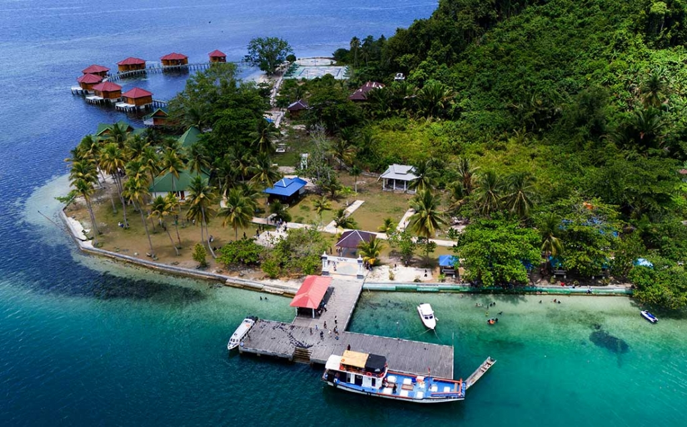

Wisata Tebing Mari Poroco
Tebing Mariporoco dan Air Terjun Kahatola berada di Kabupaten Halmahera Barat. Keindahan alam di tempat ini tidak diragukan lagi. Tebing Mari Poroco merupakan salah satu fenomena geologi yang terbentuk dari endapan vulkanik berupa lahar, lava, dan abu vulkanis dari letusan gunung ribuan tahun lalu. keindadahan wisata alam Halmahera Barat lainya pada satu lokasi yang samayaitu Air Terjun Kahatola. Keunikannya, Air Terjun Kahatola ini bukan bersumber dari Aliran sungai, namun air terjun ini terbentuk dari embun dan air hujan yang pada cekungan. Sehingga debi air terjung Kahatola tergantung dari intensitas hujan di tempat tersebut.
Wisata Nusara
Pulau wisata nusara sendiri terletak pada ibu kota Kecamatan Bacan, berdekatan dengan Desa Indomut dan Belang-belang. dari ibu kota Kecamatan Labuha,Bacan. Salah satu keistimewaan Pulau Nusa Ra adalah suasananya yang sepi dan tenang. Terpisah dari pulau-pulau berpenduduk, Nusa Ra memberikan nuansa liburan di pulau pribadi. Sepinya pengunjung menjadikan tempat ini sempurna bagi Anda yang mencari ketenangan dan ingin menikmati alam tanpa keramaian.

Wisata Tanjung Bongo
Kabupaten Halmahera Utara, Provinsi Maluku Utara terdapat sebuah wisata alam yaitu Tanjung Bongo yang banyak disebut-sebut sebagai miniatur Raja Ampat. Gugusan pulau-pulaunya yang banyak ditambah pemandangan terumbu karang dan air laut yang jernih, tak heran jika disebut sebagai miniatur Raja Ampat.